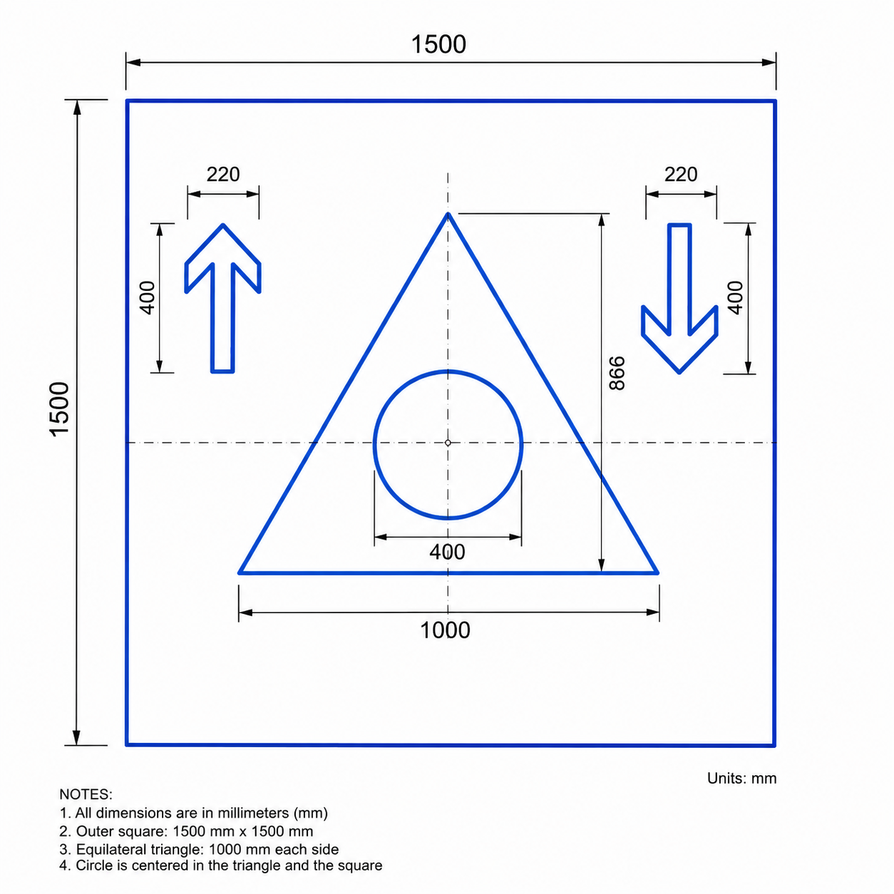

Abstract
Davinci-RoboPlot is a ROS 2-based autonomous mobile plotting platform that lets a differential-drive robot render text and CAD vector graphics directly on large floor surfaces. It is implemented on the Nova Carter robot in the NVIDIA Isaac Sim physics simulator.
The platform combines three components: a unified waypoint-generation pipeline that converts Hershey-font text and DXF CAD files into robot waypoints; a PD-LQR path-tracking controller built on an augmented four-element state vector; and a graphical interface for real-time operator control of the marking process.
At the same base speed, the PD-LQR controller reaches a mean waypoint error of 1.46 cm and a mean lateral deviation of 0.08 cm, finishing the task in 29.84 min. A conventional proportional (P) controller reaches 1.55 cm and 0.11 cm, and needs 1 h 32 min. The platform was tested on text rendering, a geometric DXF closure test, and a multi-geometry layout of a car parking lot and a football field.
- Mean lateral deviation
- 0.08 cm vs 0.11 cm with the P-controller
- Task time
- 29.8 min vs 91.7 min, 3.07× faster
- Max waypoint error
- 1.50 cm vs 60.37 cm, 40.2× lower
- Largest job
- 9.0 × 10.7 m 10-car parking lot, 6 h 32 min
What is new
- One robot, any drawing. Free text and arbitrary DXF files (lines, arcs, circles, splines) are drawn at user-chosen scale, with no application-specific templates and no limit on the output area.
- One waypoint format. Hershey text and DXF geometry are both converted to (x, y, pen) waypoints, with arc sampling that adapts to curvature and pen-up travel that is reordered to stay short.
- A damped controller. PD-LQR adds a filtered heading-error-rate state to the standard error model, plus deadlock escape, a stall watchdog and a pen-down position gate for long unattended jobs.
- Practical tuning guidance. Both controllers were tested across a range of speeds, giving a speed-versus-accuracy trade-off for hardware deployment.
System architecture
The software runs as five ROS 2 Humble nodes inside Isaac Sim. The plotter node is the hub: it receives jobs from the operator interface, generates waypoints, closes the velocity loop on wheel odometry, and switches the pen or spray gun. The robot localises itself from wheel odometry only, so the only requirement on the environment is a flat, traversable floor.



From a text string or a CAD file to floor marks
Text
Each character is a set of Hershey stroke polylines. Strokes are subdivided into 1.5 cm pieces, mapped onto the floor at the chosen scale, rotated to the robot's heading, and tagged pen-up for the first point of every stroke and pen-down for the rest.
DXF drawings
Lines, polylines, circles, arcs and splines are read with ezdxf, converted to metres from the file's units, centred and scaled to the width you choose, and ordered with a nearest-neighbour pass to cut pen-up travel.

Experiments
All runs were done in NVIDIA Isaac Sim. Long runs are sped up; the speed-up is printed on each clip.
Text rendering: “HELLO WORLD”
1,033 waypoints, letters 0.72 m tall, about 5.13 m wide. Mean waypoint error 1.44 cm, maximum 1.50 cm.
DXF closure test
A 1.5 m square, an equilateral triangle, a circle and two arrows. Together they cover straight lines, closed curves, sharp corners and abrupt heading changes.
How speed affects drawing quality (PD-LQR)
The output stays clean up to 0.15 m/s, starts to oscillate at 0.25 m/s, and fails at 0.50 m/s.
PD-LQR compared with the P-controller
Both controllers run the same DXF file at the same 0.10 m/s. The P-controller rotates in place until its heading is right and then drives forward; PD-LQR corrects heading and position while moving.
Large-scale layouts
A 10-car parking lot (two rows of five bays, wheel stops, arrows and a dashed centre line, 9.0 × 10.7 m) and a football field.
Results
PD-LQR: accuracy and time against speed
Mean lateral deviation stays near 0.8–1.1 mm up to 0.15 m/s and then rises. Above 0.20 m/s the task takes longer again, because the robot overshoots corners and has to stop, rotate and restart. The recommended operating point is 0.15 m/s.
Both controllers across speeds
Head-to-head at 0.10 m/s, DXF test file
| Metric | PD-LQR | P-controller | Difference |
|---|---|---|---|
| Max waypoint error | 1.50 cm | 60.37 cm | 40.2× lower |
| Mean lateral deviation | 0.08 cm | 0.11 cm | |
| Max lateral deviation | 2.08 cm | 6.04 cm | 2.9× lower |
| Total task time | 29.83 min | 91.73 min | 3.07× faster |
Parking lot layout at 0.10 m/s
| Metric | PD-LQR | P-controller |
|---|---|---|
| Mean lateral deviation | 0.06 cm | 0.07 cm |
| Max lateral deviation | 2.44 cm | 31.08 cm |
| Max waypoint error | 201.61 cm | 646.15 cm |
| Total task time | 6 h 32 min | 14 h 40 min |
Tracking within a stroke stays accurate for hours. The large waypoint errors come from wheel-odometry drift during pen-up moves, which is why absolute position correction is the first item of future work.
Limitations and next steps
- Simulation only. All results come from Isaac Sim. Wheel slip, backlash and sensor noise on a real floor may reduce accuracy.
- Odometry drift. Localisation uses wheel odometry alone, so drift grows over long pen-up moves. A fiducial, UWB or lidar-based correction is planned.
- Hand-tuned gains. The LQR weights were tuned by hand on square-closure tests at 0.10 m/s and may need re-tuning on other robots or floors.
- Next. Hardware tests on a physical Nova Carter, and Davinci-RoboPlot v2 with a three-axis CNC gantry on the mobile base for sub-millimetre precision.
BibTeX
@article{oraby2026davinciroboplot,
title = {Davinci-RoboPlot: An Autonomous Mobile Plotting Platform with PD-LQR Path Tracking for Generalized Large-Scale Floor Marking of Text and CAD Vector Graphics},
author = {Oraby, Hussein and Lee, Deok Jin},
journal = {IEEE Access},
year = {2026}
}